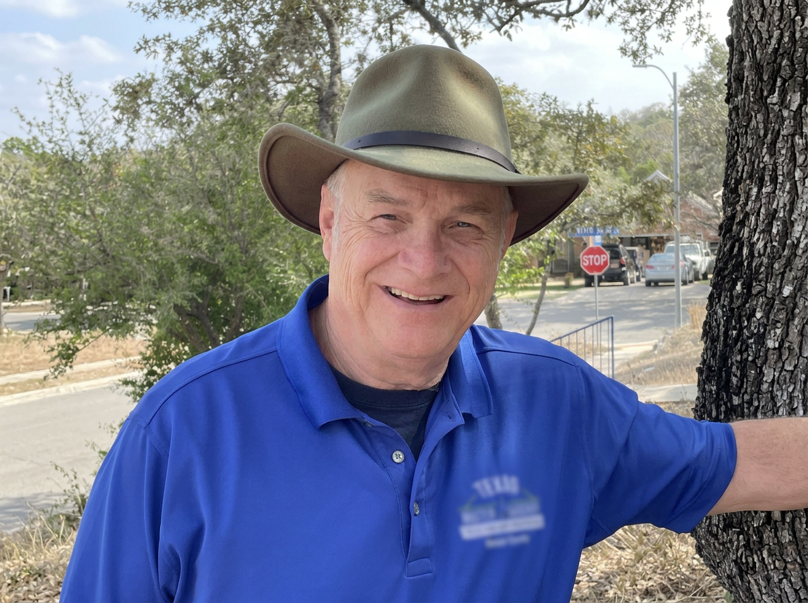

Bill Swantner
Bill Swantner’s passion for horticulture took root in childhood, nurtured by his parents’ lifelong love of gardening. Today, he is a seasoned professional gardener and educator who has delivered over 130 presentations on a wide variety of horticultural topics throughout San Antonio.
Bill’s foundational education includes studying landscape design with faculty from the New York Botanical Garden, Cornell University, Texas A&M University, and Longwood Gardens. He has received additional training in Compost, Tree Care, Texas Superstars, Rainwater Harvesting, Turfgrass Management, Vegetable Production, First Detector, Entomology, Earth-Kind® Landscaping, Plant Propagation, and Plant Pathology.
His hands-on experience includes extensive volunteer work at the San Antonio Botanical Garden, where he worked in the propagation areas, and the rare and endangered species area. Bill has brought together decades of formal study and practical expertise to serve as the Head Garden Steward for The Gardens at Zion, a thriving sanctuary that also features a gardening school for youth.
Deeply committed to community education, Bill actively assists with advanced horticultural training programs and numerous educational events across the region.

Connect With a Gardening Specialist
Complete the inquiry form to initiate a detailed consultation and receive a comprehensive proposal tailored to your landscape objectives.